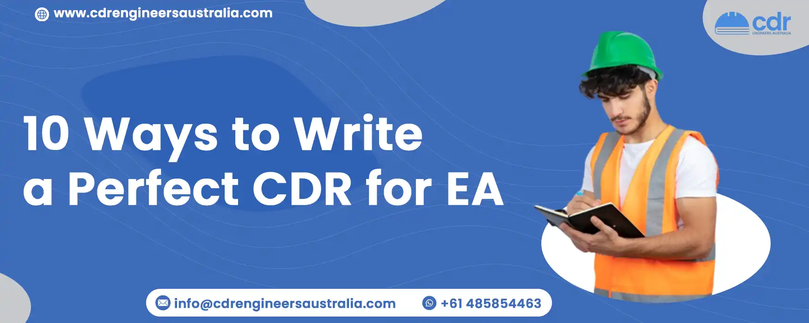

10 Ways to Write a Perfect CDR for EA
A Competency Demonstration Report (CDR) is a customized written document that is used for assessing the competency of an engineer on the basis of their skill in the respective occupation category. It is the document that is required to get approval from Engineers Australia. So it is mandatory for an applicant to write a perfect CDR report. From providing a suitable introduction to having proper CPD, the points below describe the perfect ways of CDR Report Writing. To avoid CDR rejection, it is better to have sound knowledge about the writing procedures of CDR reports so that an applicant qualifies on Engineers Australia Skill Assessment parameters.
While writing a successful CDR for Engineers Australia, various approaches must be dealt with to avoid rejection. A good CDR Report serves as an assessment benchmark for the engineering degree you have earned, and the experience you have gained by working in the sector. It is very much necessary to follow Engineers Australia's (EA) guidelines while writing a CDR report.
Here are some clinical ways for writing perfect CDR report
1. Suitable Information
The introduction part with the length of approximately 100 words is best suited for a proper CDR. It should contain some specific information such as name, address and so on. The information to be contained in the introduction part includes:
- Name of the organization.
- Chronological description
- Dates and duration of career episodes
- Title of the position occupied by you
- Location where the experience was gained.
This information should be provided in the CDR report in a summarized way to complete the introduction.
2. Appropriate Background
For the proper background, you should provide the content about where you have been studying or working. The background part with the length of 200 to 500 words is termed as the proper background for CDR. Some information to be included in this part are:
- Nature of the overall project
- Nature of your particular work area
- Proper organization of information in hierarchy
- Job description or statement of the duties
- Project objectives
3. Personal Engineering Activity
This part in CDR is the narrative's body and the primary assessable component. In this part, you must explain the personal engineering activity you have performed as an engineer in detail, which should not exceed more than a 1000 words. Your roles and contributions to the project should be highlighted in this part. Things to be mentioned in this part are:
- How do you apply your skills and knowledge?
- Tasks presented to you and how you accomplish them.
- How do you work with other team members?
- Include creative designs
- How do you solve technical problems?
4. Include Creative Designs
In successful CDR assessment, design activities have a top priority. For a report to be assessed positively, technical creative designs create a high chance of approval. Explanation of technological experiences regarding design activities should be mentioned in CDR reports so that it gets assessed favorably. As creative design activities in engineering get high priority in CDR assessment, it is fruitful to provide the detailed information of the activities you have done in the CDR report.
5. Technical Difficulties should be solved
In your career episode, the project details your involvement with, as well as your contribution to the project as critical components. Each project generates some technical difficulties or problems. You must address such technical difficulties while writing a CDR report. At least three technical difficulties/problems should be included in your CDR report. In your career episodes, you must include the problem statement as well as the steps you took to solve it. Including these major information leads to writing a successful CDR.
6. Project Management Details
Project management is in charge of making sure that a project's goals, timeline, and budget are met. It is better to include duration, job description of the duties, and team members who were involved in the problem resolution in a CDR report. Technical details such as a schedule, assigning tasks to team members, and setting deadlines for each task on your report should also be included as project management details in a CDR report.
7. Summary
It is the dream of many people all over the world to work as an engineer in Australia and receive its citizenship there. For that, they need to prepare and send their CDR Report to Engineers Australia. However, many engineers struggle to display a top-notch CDR Report to Engineers Australia due to a lack of expertise about CDR writing prerequisites. In summary, it should include:
- Overall project view
- Contribution to the project
- How the project met the goals and requirements.
8. Summary Statement
Once you begin to write the CDR Report, you must acknowledge that it contains three key elements: a Summary Statement, a list of Career Episodes, and a list of Continuous Professional Development (CPD). Each one plays a vital role in the CDR Report. Most assessors read the summary statement on the first page. It is the most important and difficult part of any CDR because you must illustrate all the competency elements for the shortlisted job category. You must provide cross references to all career episodes in the Summary Statement (SS). It demonstrates how well you analyze information, which also provides their initial impressions of you for migration skill assessment. For all three episodes, one summary statement is required.
9. Plagiarism should be avoided
There are various websites which have many samples of CDR. Do not copy even a single line from them. You can use the internet or other sources to get CDR samples, but only for reference. Engineers Australia is against plagiarism, and if they discover you copied the content in your report, you may be disqualified from the assessment for a whole year. Engineers Australia has many ways of knowing whether you made a genuine mistake or attempted to cheat. They use advanced, powerful tools and software to catch plagiarism. Editing and proofreading is an essential part of an approved CDR. So, have it checked by the professionals before submitting it. We at CDR Engineers Australia evaluate the completed documents several times in order to make sure it is clutter and plagiarism free.
10. Write a Perfect CPD
Engineers Australia has made Continuing Professional Development (CPD) Report a necessity for the Australia skilled Assessment. Keep in mind that an engineer is considered up to date with engineering developments through CPD. A perfect CPD includes the following information: title, date, duration, and location of the training. Continuing CPD activities should be designed to update or expand your abilities and skills, allowing you to maintain technical expertise, deal with changes successfully, and serve the community better. Participating in CPD activities even allows you to expand your connections.
Conclusion
Writing a CDR is challenging as it can be technical. All the guidelines of the Engineers Australia must be followed and there's also added pressure as the CDR must be immaculate. Everything must be clear and concise so that the Assessor doesn't get confused. You must include all the points to prove your knowledge and skills. While the Assessor goes through your CDR report, you must emerge as a competent professional, but do not lie. For reference, go through the CDR Samples that have already got approval before writing your own CDR. With a successful CDR, your destination "Australia" has never been closer.